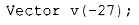
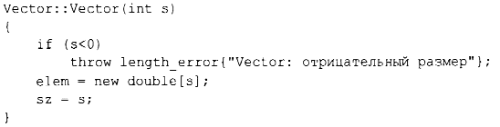
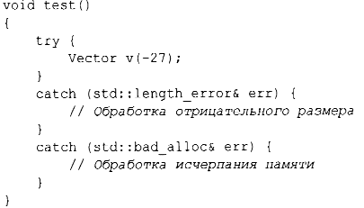
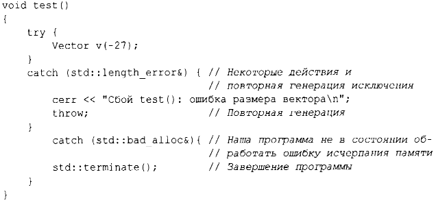

⇐3.5.1 Исключения 3.5.3 Альтернативные варианты обработки ошибок⇒
Использование исключений для сигнализации о выходе за границы массива является примером функции, проверяющей свои аргументы и отказывающейся работать, когда не выполняется ее основное предусловие. Если бы мы формально описывали оператор индекса Vector, мы бы указали что-то наподобие "индекс должен быть в диапазоне [О:size()) ",и это фактически и есть то условие, которое мы проверяем в нашей реализации operator[](). Обозначение [а:b) означает полуоткрытый диапазон, в котором а является частью диапазона, а b - нет. Всякий раз, определяя функцию, мы должны рассмотреть, каковы ее предусловия и следует ли их тестировать (§3.5.3). Для большинства приложений проверка простых инвариантов является хорошей идеей; см. также §3.5.4.
Однако operator[]() работает с объектами типа Vector, и ничто из того, что он делает, не имеет смысла, пока элементы Vector не будут иметь "разумные" значения. В частности, мы говорили, что "elem указывает на массив из sz элементов типа double", но это было сказано только в комментарии. Такое утверждение о том, что предполагается истинным для класса, называется инвариантом класса или просто инвариантом. Задача конструктора - установить инвариант своего класса (так, чтобы функции-члены могли полагаться на то, что он выполняется), а задача функций-членов - гарантировать выполнение инварианта после их завершения. К сожалению, наш конструктор Vector только частично выполнил свою работу. Он правильно инициализировал элементы Vector, но не убедился, что переданные ему аргументы имели смысл. Что будет при следующем вызове?
Похоже, это приведет к неприятностям.
Вот более надежное определение:
Для сообщения о некорректном числе элементов я использую исключение length_error стандартной библиотеки, потому что некоторые операции стандартной библиотеки используют его для сообщения о подобных проблемах. Если оператор new не может выделить необходимую память, он генерирует исключение std::bad_alloc. Теперь мы можем написать:
Вы можете определить собственные классы, которые будут использоваться в качестве исключений, и заставить их переносить любую информацию из точки, где обнаружена ошибка, в точку, в которой она может быть обработана (§3.5.1).
Часто функция не имеет возможности завершить назначенную ей задачу после генерации исключения. В таком случае "обработка" исключения означает выполнение минимальной локальной очистки и повторную генерацию того же исключения. Например:
В тщательно спроектированном коде блоки try редки. Избегайте излишних блоков try, систематически используя идиому RAll (§4.2.2, §5.3).
Понятие инвариантов занимает центральное место в разработке классов, а предусловия играют аналогичную роль в разработке функций. Инварианты
Понятие инвариантов лежит в основе концепции управления ресурсами С++, поддерживаемой конструкторами (глава 4, "Классы") и деструкторами (§4.2.2, § 13.2).